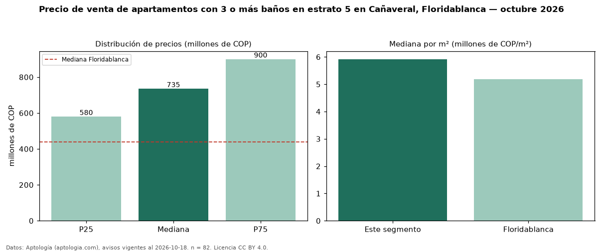

Precio de venta de apartamentos con 3 o más baños en estrato 5 en Cañaveral, Floridablanca — octubre 2026
En Cañaveral, Floridablanca, la mediana de precio de venta de apartamentos con 3 o más baños en estrato 5 es COP 735 millones, según 82 avisos vigentes. Eso es 23 % más que la mediana de los apartamentos en estrato 5 en venta de Cañaveral (COP 600 millones, n = 165); este segmento reúne el 50 % de esos avisos. Por metro cuadrado, la mediana es COP 5,92 millones/m² (n = 79), 0 % por encima de los apartamentos en estrato 5 en venta de Cañaveral (COP 5,92 millones/m²). El área mediana anunciada es 120 m². El segmento con más oferta es el de 3 o más habitaciones (80 avisos, mediana COP 735 millones). La administración mediana declarada es COP 582.500 al mes (n = 76). La mediana de todos los apartamentos en venta de Floridablanca es COP 440 millones (+67 % de diferencia). La mitad central de los avisos va de COP 580 millones a COP 900 millones (razón 1,6), una dispersión moderada. Datos: Aptología (aptologia.com), CC BY 4.0 — https://www.aptologia.com/venta/floridablanca/canaveral. Archivos: PDF, CSV con las cifras y gráfica PNG.

| Avisos únicos | 82 |
|---|---|
| Percentil 25 | COP 580.000.000 |
| Mediana | COP 735.000.000 |
| Percentil 75 | COP 899.750.000 |
| Mediana por m² | COP 5.918.367 |
Fuente: avisos vigentes de portales inmobiliarios recopilados por Aptología, deduplicados (mínimo 30 avisos únicos por celda). Precios pedidos, no cerrados. Fecha: 2026-10-18.